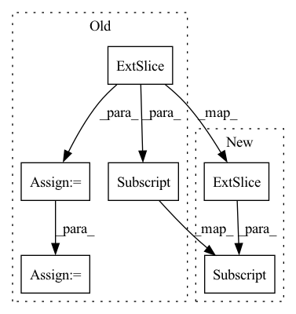

Pattern ID :3341
Before Change
for i in range(target.shape[1]):
if i != self.ignore_index:
dice_loss = dice(predict[:, i] , target[:, i])
if self.weight is not None:
assert self.weight.shape[0] == target.shape[1], \
"Expect weight shape [{}], get[{}]".format(target.shape[1], self.weight.shape[0])
dice_loss *= self.weight[i]
total_loss += dice_loss
return total_loss/target.shape[1]After Change
dice = 0.
// dice系数的定义
for i in range(pred.size(1)):
dice += 2 * (pred[:,i] * target[:,i]).sum(dim=1).sum(dim=1).sum(dim=1) / (pred[:,i].pow(2).sum(dim=1).sum(dim=1).sum(dim=1) +
target[:,i].pow(2).sum(dim=1).sum(dim=1).sum(dim=1) + smooth)
// 返回的是dice距离
dice = dice / pred.size(1)In pattern: SUPERPATTERN
Frequency: 4
Non-data size: 6
Instances Fragment ID: 17251013
Project Name: lee-zq/3dunet-pytorch
Commit Name: 070a8816879b33e97a9541e35cc5b2bfaf1bcd76
Time: 2021-05-22
Author: zq_lee@163.com
File Name: utils/loss.py
M Class Name: DiceLoss
N Class Name: DiceLoss
M Method Name: forward(3)
N Method Name: forward(3)
M Parent Class: nn.Module
N Parent Class: nn.Module
M File Name: utils/loss.py
N File Name: utils/loss.py
M Start Line: 78
M End Line: 93
N Start Line: 18
N End Line: 27
Before Change
-1,
self.z_dim
)
c = c[:, :-self.n_prediction_steps, :] .transpose(1, 0)
c = self.positional(c)
if self.mask is None:
self.mask = generate_square_subsequent_mask(c.size(0), c.device)
losses, accuracies = list(), list()
for k in range(1, self.n_prediction_steps+1):After Change
-1,
self.z_dim
)
c = c[:, :-self.n_prediction_steps, :]
losses, accuracies = list(), list()
for k in range(1, self.n_prediction_steps+1):
z_shift = z[:, :, k:length + k, :] Fragment ID: 17250999
Project Name: bshall/vectorquantizedcpc
Commit Name: 535c95415d62ececde085e376f451b3b76e1b624
Time: 2020-05-01
Author: benji.l.shall@gmail.com
File Name: model.py
M Class Name: CPCLoss
N Class Name: CPCLoss
M Method Name: forward(3)
N Method Name: forward(3)
M Parent Class: nn.Module
N Parent Class: nn.Module
M File Name: model.py
N File Name: model.py
M Start Line: 186
M End Line: 195
N Start Line: 137
N End Line: 143
Before Change
M = r.size(-1) - 1
// Make Toeplitz matrix.
r_0M = r[..., :-1]
r_M1 = r_0M[..., 1:].flip(-1)
r_MM = torch.cat((r_M1, r_0M), dim=-1)
R = r_MM.unfold(-1, M, 1).flip(-2)
// Solve system.
r_0 = r[..., 0]After Change
// Make Toeplitz matrix.
R = symmetric_toeplitz(r[..., :-1] )
// Solve system.
r1 = r[..., 1:] Fragment ID: 17251012
Project Name: sp-nitech/diffsptk
Commit Name: 4752e5ac0a92159ce66d92991740fb875cde5688
Time: 2022-03-21
Author: takenori.yoshimura24@gmail.com
File Name: diffsptk/core/levdur.py
M Class Name: PseudoLevinsonDurbinRecursion
N Class Name: PseudoLevinsonDurbinRecursion
M Method Name: forward(2)
N Method Name: forward(2)
M Parent Class: nn.Module
N Parent Class: nn.Module
M File Name: diffsptk/core/levdur.py
N File Name: diffsptk/core/levdur.py
M Start Line: 67
M End Line: 76
N Start Line: 70
N End Line: 78
Before Change
//---------------------------------------------------------------//
// 计算预测结果和真实结果的giou
//----------------------------------------------------------------//
giou = self.box_giou(pred_boxes, y_true[..., :4] )
loss_loc = torch.mean((1 - giou)[y_true[..., 4] == 1])
loss_cls = torch.mean(self.BCELoss(pred_cls[y_true[..., 4] == 1], self.smooth_labels(y_true[..., 5:][y_true[..., 4] == 1], self.label_smoothing, self.num_classes)))
loss += loss_loc * self.box_ratio + loss_cls * self.cls_ratio
//-----------------------------------------------------------//
// 计算置信度的loss
//-----------------------------------------------------------//After Change
//---------------------------------------------------------------//
// 计算预测结果和真实结果的giou
//----------------------------------------------------------------//
giou = self.box_giou(pred_boxes[y_true[..., 4] == 1], y_true[..., :4] [y_true[..., 4] == 1])
loss_loc = torch.sum((1 - giou) * box_loss_scale[y_true[..., 4] == 1])
//-----------------------------------------------------------// Fragment ID: 17251028
Project Name: bubbliiiing/yolov5-pytorch
Commit Name: d49e041b6f4ef50c5d94ce88d33d147f3227bc77
Time: 2022-01-15
Author: 47347516+bubbliiiing@users.noreply.github.com
File Name: nets/yolo_training.py
M Class Name: YOLOLoss
N Class Name: YOLOLoss
M Method Name: forward(4)
N Method Name: forward(4)
M Parent Class: nn.Module
N Parent Class: nn.Module
M File Name: nets/yolo_training.py
N File Name: nets/yolo_training.py
M Start Line: 158
M End Line: 198
N Start Line: 156
N End Line: 200